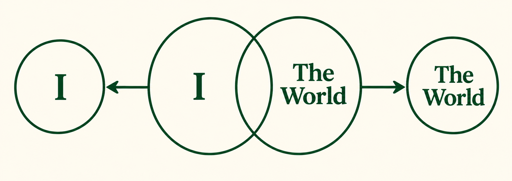

Self and world: cleaned board drawing
Original authored English; any bilingual material is retained as written.
Inglês original do autor; os trechos bilíngues permanecem como foram escritos.

Self and world: cleaned board drawing
Created from the user-supplied board image on 12 September 2026 using the built-in image-generation tool. Visually checked: four labels, central overlapping ovals, outward left and right arrows. This is a simplified course adaptation, not an exact facsimile. Source image: codex-clipboard-66dd76c0-cdc3-4bb8-8c6a-f9dca7011c13.png. The source's retraced intermediate outlines are simplified; do not treat their omission as evidence about the lecturer's philosophical argument. The drawing illustrates experienced separation, not proof of two independent realities. Not yet embedded in a published lesson.
Output: self-world-clear-v1.png

Generation prompt
Edit target: supplied chalkboard self/world diagram. Create a clear, polished educational redraw on plain warm ivory paper, dark forest-green lines and large highly legible text. Wide landscape diagram with generous margins. Preserve the central idea and horizontal layout: in the CENTER two large overlapping upright oval outlines, left labeled 'I' and right labeled 'The World'; on the FAR LEFT a separate smaller oval labeled 'I'; on the FAR RIGHT a separate oval labeled 'The World'. One clear arrow leads outward from the central left oval toward the far-left oval (points LEFT). Another clear arrow leads outward from the central right oval toward the far-right oval (points RIGHT). The two central ovals overlap each other; outer ovals are separate from them. Simplify retraced chalk strokes to single smooth consistent lines, remove erased marks, shadows, chalkboard grain and visual clutter. Text never collides with oval outlines or arrows. Preserve those four labels verbatim; do not add philosophical conclusions, numbered stages, other labels, decorative objects, or a title. This is a faithful interpretive cleanup of the board drawing, not a new explanatory theory. Flat crisp textbook diagram, clean professional typography, high contrast, visually balanced.